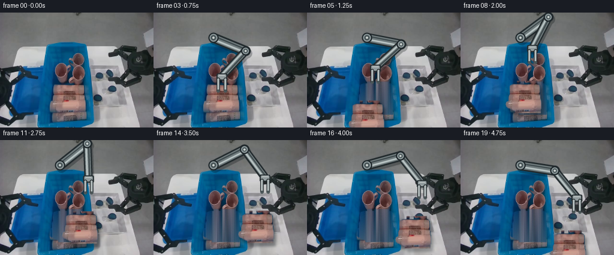
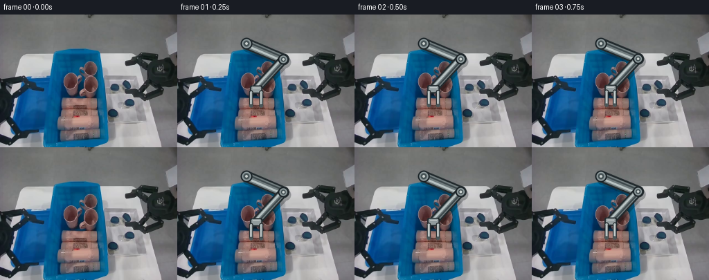
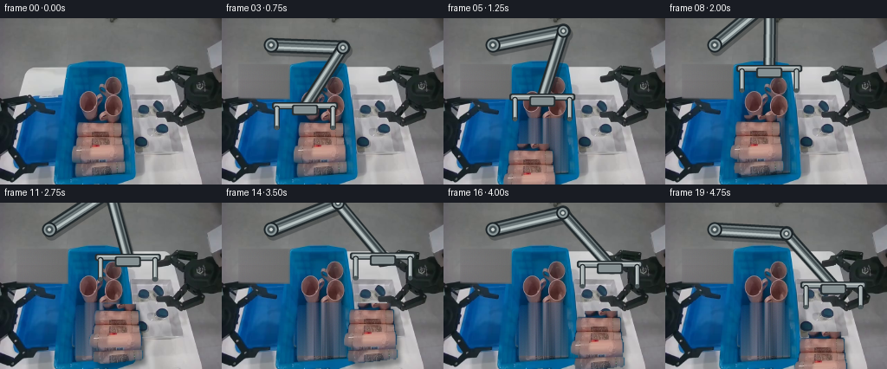
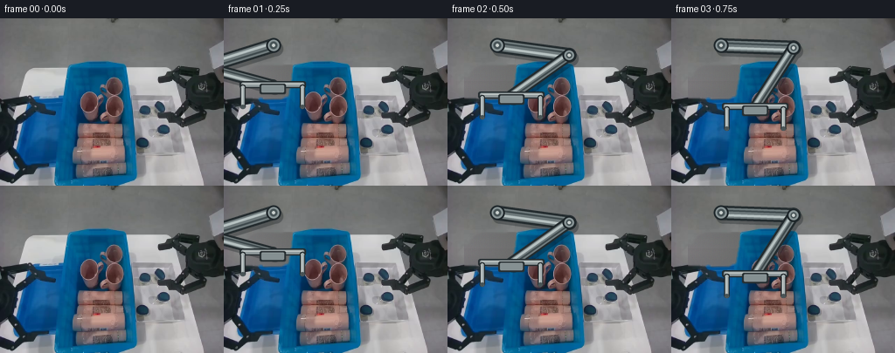

CODING AGENTS AS PIXEL WORLD MODELS
traex/DeepSeek-V4.1-Flash · common50_0003
点击播放 · 原生 RGB 像素
逐轮保存的候选
回放视频、检查图与代码变化。
每份候选均可单独播放。实际图片检查记录在下方工具轨迹中。
候选 01播放与检查图
点击播放 · 原生 RGB 像素


展开代码变化
--- 上一保存版本
+++ 本次保存版本
@@ -0,0 +1,291 @@
+"""Generate a 20-frame RGB robot sorting animation from first_frame.png."""
+
+from pathlib import Path
+
+import numpy as np
+from PIL import Image, ImageDraw, ImageFilter
+from scipy import ndimage
+
+import artifact_io
+
+
+CASE_DIR = Path(__file__).resolve().parent
+W, H, N = 256, 192, 20
+SS = 4 # Supersampling for the synthesized robot arm.
+
+
+def largest_component(mask):
+ labels, count = ndimage.label(mask, structure=np.ones((3, 3), dtype=bool))
+ if count == 0:
+ return mask
+ sizes = ndimage.sum(mask, labels, range(1, count + 1))
+ return labels == (int(np.argmax(sizes)) + 1)
+
+
+def extract_product(src):
+ """Extract the warm laundry package and a soft alpha matte."""
+ r, g, b = src.transpose(2, 0, 1).astype(np.int16)
+ warm = (r > g + 6) & (r > b + 3) & (r > 68)
+
+ roi = np.zeros((H, W), dtype=bool)
+ roi[116:168, 84:144] = True
+ mask = warm & roi
+ mask = ndimage.binary_closing(mask, np.ones((3, 3), dtype=bool), iterations=2)
+ mask = ndimage.binary_fill_holes(mask)
+ mask = largest_component(mask)
+ mask = ndimage.binary_dilation(mask, np.ones((3, 3), dtype=bool), iterations=1)
+
+ alpha = Image.fromarray((mask * 255).astype(np.uint8), "L").filter(
+ ImageFilter.GaussianBlur(0.55)
+ )
+ return mask, np.asarray(alpha, dtype=np.float32) / 255.0
+
+
+def reconstruct_bin(src, remove_mask):
+ """Reconstruct the bin surface hidden by the package using local colors."""
+ out = src.astype(np.float32).copy()
+ rng = np.random.default_rng(17)
+
+ region = np.zeros((H, W), dtype=bool)
+ region[115:177, 83:146] = True
+ fill = region & ndimage.binary_dilation(
+ remove_mask, np.ones((3, 3), dtype=bool), iterations=2
+ )
+
+ # Use the clear blue rows immediately above and below the package. A
+ # vertical color ramp preserves the bin's lighting while copied fine
+ # texture keeps the original sensor-noise character.
+ top = src[112:115, 83:146].mean(axis=0)
+ bottom = src[176:179, 83:146].mean(axis=0)
+ for y in range(115, 177):
+ t = (y - 114.0) / (177.0 - 114.0)
+ ramp = (1.0 - t) * top + t * bottom
+ for x in range(83, 146):
+ if fill[y, x]:
+ texture = src[112 + (y % 3), 62 + ((x - 83) % 21)].astype(np.float32)
+ base = 0.72 * ramp[x - 83] + 0.28 * texture
+ out[y, x] = base + rng.normal(0.0, 1.25, 3)
+
+ # Feather the reconstruction boundary so no rectangular patch is visible.
+ feather = np.asarray(
+ Image.fromarray((fill * 255).astype(np.uint8), "L")
+ .filter(ImageFilter.GaussianBlur(1.0)),
+ dtype=np.float32,
+ ) / 255.0
+ return np.clip(out * feather[..., None] + src * (1.0 - feather[..., None]), 0, 255)
+
+
+def sprite_rgba(src, alpha):
+ rgba = np.dstack([src, (alpha * 255).astype(np.uint8)])
+ return Image.fromarray(rgba, "RGBA")
+
+
+def paste_sprite(canvas, sprite, center, shadow_strength):
+ """Paste the package with a soft contact shadow."""
+ x = int(round(center[0] - sprite.width / 2))
+ y = int(round(center[1] - sprite.height / 2))
+
+ if shadow_strength > 0:
+ alpha = np.asarray(sprite.getchannel("A"), dtype=np.float32) / 255.0
+ shadow = Image.fromarray(
+ np.clip(alpha * 255.0 * shadow_strength, 0, 255).astype(np.uint8), "L"
+ ).filter(ImageFilter.GaussianBlur(2.1))
+ shadow_layer = Image.new("RGBA", canvas.size, (8, 16, 22, 0))
+ shadow_layer.putalpha(shadow)
+ canvas.alpha_composite(shadow_layer, (x + 4, y + 6))
+
+ canvas.alpha_composite(sprite, (x, y))
+
+
+def solve_elbow(root, wrist, length):
+ root = np.asarray(root, dtype=np.float64)
+ wrist = np.asarray(wrist, dtype=np.float64)
+ delta = wrist - root
+ distance = float(np.linalg.norm(delta))
+ distance = np.clip(distance, 2.0, 2.0 * length - 0.25)
+ direction = delta / max(float(np.linalg.norm(delta)), 1e-6)
+ midpoint = (root + wrist) * 0.5
+ height = float(np.sqrt(max(length * length - (distance * 0.5) ** 2, 0.0)))
+ perp = np.array([-direction[1], direction[0]])
+ candidate_a = midpoint + perp * height
+ candidate_b = midpoint - perp * height
+ return candidate_a if candidate_a[1] < candidate_b[1] else candidate_b
+
+
+def draw_arm(canvas, wrist, closing):
+ """Draw a rigid two-link left arm and parallel-jaw gripper."""
+ root = np.array([100.0, 42.0])
+ wrist = np.asarray(wrist, dtype=np.float64)
+ elbow = solve_elbow(root, wrist, 58.0)
+
+ scale = SS
+ overlay = Image.new("RGBA", (W * scale, H * scale), (0, 0, 0, 0))
+ draw = ImageDraw.Draw(overlay)
+
+ def p(point):
+ return tuple((np.asarray(point, dtype=np.float64) * scale).tolist())
+
+ def capsule(a, b, width, fill):
+ draw.line([p(a), p(b)], fill=fill, width=int(width * scale), joint="curve")
+ radius = width * scale / 2
+ for q in (a, b):
+ qx, qy = p(q)
+ draw.ellipse(
+ (qx - radius, qy - radius, qx + radius, qy + radius), fill=fill
+ )
+
+ # Contact shadow.
+ shadow_a = root + np.array([2.5, 4.0])
+ shadow_e = elbow + np.array([2.5, 4.0])
+ shadow_w = wrist + np.array([2.5, 4.0])
+ capsule(shadow_a, shadow_e, 17, (8, 14, 16, 72))
+ capsule(shadow_e, shadow_w, 14, (8, 14, 16, 72))
+
+ # Dark outlines, metal bodies, and narrow specular strips.
+ for a, b, outer, body in (
+ (root, elbow, 17, 12),
+ (elbow, wrist, 14, 9.5),
+ ):
+ capsule(a, b, outer, (34, 42, 45, 255))
+ capsule(a, b, body, (111, 122, 124, 255))
+ direction = np.asarray(b) - np.asarray(a)
+ direction /= max(np.linalg.norm(direction), 1e-6)
+ normal = np.array([-direction[1], direction[0]])
+ highlight = normal * body * 0.21
+ capsule(a + highlight, b + highlight, 3.2, (181, 192, 192, 255))
+ shade = -normal * body * 0.22
+ capsule(a + shade, b + shade, 2.4, (64, 75, 78, 255))
+
+ for joint, radius in ((root, 8.5), (elbow, 7.6)):
+ jx, jy = p(joint)
+ r = radius * scale
+ draw.ellipse((jx - r, jy - r, jx + r, jy + r), fill=(30, 38, 42, 255))
+ r2 = (radius - 2.0) * scale
+ draw.ellipse((jx - r2, jy - r2, jx + r2, jy + r2), fill=(134, 146, 148, 255))
+ r3 = (radius - 4.2) * scale
+ draw.ellipse((jx - r3, jy - r3, jx + r3, jy + r3), fill=(72, 84, 87, 255))
+ r4 = 1.8 * scale
+ draw.ellipse((jx - r4, jy - r4, jx + r4, jy + r4), fill=(198, 205, 203, 255))
+
+ # Wrist block.
+ wx, wy = wrist
+ draw.rounded_rectangle(
+ ((wx - 9) * scale, (wy - 5) * scale, (wx + 9) * scale, (wy + 7) * scale),
+ radius=2.5 * scale,
+ fill=(36, 44, 47, 255),
+ )
+ draw.rounded_rectangle(
+ ((wx - 7) * scale, (wy - 3.5) * scale, (wx + 7) * scale, (wy + 5) * scale),
+ radius=1.8 * scale,
+ fill=(145, 155, 157, 255),
+ )
+ draw.line(
+ [(wx - 5) * scale, (wy - 1.5) * scale, (wx + 5) * scale, (wy - 1.5) * scale],
+ fill=(205, 211, 209, 255),
+ width=max(1, int(1.2 * scale)),
+ )
+
+ spread = 8.0 - 2.8 * closing
+ finger_top = wy + 5.0
+ finger_bottom = wy + 24.0
+ for side in (-1, 1):
+ fx = wx + side * spread
+ capsule((fx, finger_top), (fx, finger_bottom), 5.8, (35, 42, 45, 255))
+ capsule((fx, finger_top), (fx, finger_bottom), 3.4, (164, 174, 175, 255))
+ draw.line(
+ [(fx - 0.8) * scale, finger_top * scale, (fx - 0.8) * scale, finger_bottom * scale],
+ fill=(211, 217, 215, 255),
+ width=max(1, int(0.9 * scale)),
+ )
+ draw.ellipse(
+ (
+ (fx - 2.5) * scale,
+ (finger_bottom - 2.0) * scale,
+ (fx + 2.5) * scale,
+ (finger_bottom + 3.0) * scale,
+ ),
+ fill=(73, 84, 86, 255),
+ )
+
+ overlay = overlay.resize((W, H), Image.Resampling.LANCZOS)
+ canvas.alpha_composite(overlay)
+
+
+def ease(t):
+ t = float(np.clip(t, 0.0, 1.0))
+ return t * t * (3.0 - 2.0 * t)
+
+
+def object_center(frame):
+ """Package center and gripper closing amount for each frame."""
+ start = np.array([114.0, 142.0])
+ if frame <= 4:
+ return start, frame / 4.0
+
+ lift_keys = {
+ 5: np.array([114.0, 128.0]),
+ 6: np.array([114.0, 113.0]),
+ 7: np.array([114.0, 101.0]),
+ 8: np.array([120.0, 95.0]),
+ }
+ if frame in lift_keys:
+ return lift_keys[frame], 1.0
+
+ if frame <= 15:
+ t = ease((frame - 8) / 7.0)
+ p = np.array([120.0, 95.0]) * (1.0 - t) + np.array([190.0, 98.0]) * t
+ p[1] += 4.0 * np.sin(np.pi * t)
+ return p, 1.0
+
+ lower = {
+ 16: np.array([192.0, 108.0]),
+ 17: np.array([194.0, 119.0]),
+ 18: np.array([194.0, 128.0]),
+ 19: np.array([194.0, 132.0]),
+ }
+ return lower[frame], 1.0
+
+
+def gripper_wrist(center, closing):
+ # The package hangs between the jaws, whose tips straddle its upper third.
+ return np.asarray(center, dtype=np.float64) + np.array([0.0, -36.0 + 2.0 * (1.0 - closing)])
+
+
+def build_frames():
+ source_image = Image.open(CASE_DIR / "first_frame.png").convert("RGB")
+ src = np.asarray(source_image, dtype=np.uint8)
+ if src.shape != (H, W, 3):
+ raise ValueError(f"Unexpected first frame shape: {src.shape}")
+
+ remove_mask, alpha = extract_product(src)
+ reconstructed = reconstruct_bin(src, remove_mask).astype(np.uint8)
+ sprite = sprite_rgba(src, alpha)
+
+ frames = [src.copy()]
+ for frame in range(1, N):
+ center, closing = object_center(frame)
+ base = src if frame <= 4 else reconstructed
+ canvas = Image.fromarray(base, "RGB").convert("RGBA")
+
+ if frame >= 5:
+ lift = float(np.clip((center[1] - 95.0) / 47.0, 0.0, 1.0))
+ shadow = 0.36 if frame < 16 else 0.28 + 0.04 * (frame - 16)
+ paste_sprite(canvas, sprite, center, shadow_strength=shadow)
+
+ draw_arm(canvas, gripper_wrist(center, closing), closing)
+ frames.append(np.asarray(canvas.convert("RGB"), dtype=np.uint8))
+
+ return np.stack(frames)
+
+
+def main():
+ frames = build_frames()
+ assert frames.shape == (N, H, W, 3), frames.shape
+ assert frames.dtype == np.uint8
+ assert np.array_equal(frames[0], np.asarray(Image.open(CASE_DIR / "first_frame.png").convert("RGB")))
+ artifact_io.save(frames, CASE_DIR)
+ print("saved", frames.shape, "to", CASE_DIR)
+
+
+if __name__ == "__main__":
+ main()
候选 02播放与检查图
点击播放 · 原生 RGB 像素

展开代码变化
--- 上一保存版本
+++ 本次保存版本
@@ -23,13 +23,14 @@
def extract_product(src):
- """Extract the warm laundry package and a soft alpha matte."""
+ """Extract the complete package from the strongly blue bin surface."""
r, g, b = src.transpose(2, 0, 1).astype(np.int16)
- warm = (r > g + 6) & (r > b + 3) & (r > 68)
roi = np.zeros((H, W), dtype=bool)
- roi[116:168, 84:144] = True
- mask = warm & roi
+ roi[114:181, 82:146] = True
+ # The package spans warm cream through a much darker folded base. Against
+ # the saturated blue bin, the stable separator is its red/blue balance.
+ mask = (b < r + 15) & roi
mask = ndimage.binary_closing(mask, np.ones((3, 3), dtype=bool), iterations=2)
mask = ndimage.binary_fill_holes(mask)
mask = largest_component(mask)
@@ -39,6 +40,35 @@
ImageFilter.GaussianBlur(0.55)
)
return mask, np.asarray(alpha, dtype=np.float32) / 255.0
+
+
+def reconstruct_left_hand(src):
+ """Remove the movable left hand while retaining its surrounding workspace."""
+ out = src.astype(np.float32).copy()
+ rng = np.random.default_rng(23)
+ x0, x1, y0, y1 = 19, 79, 53, 94
+ fill = np.zeros((H, W), dtype=np.float32)
+ fill[y0:y1, x0:x1] = 1.0
+ fill = np.asarray(
+ Image.fromarray((fill * 255).astype(np.uint8)).filter(
+ ImageFilter.GaussianBlur(1.4)
+ ),
+ dtype=np.float32,
+ ) / 255.0
+
+ bg_mean = np.array([108.0, 109.0, 108.0])
+ for y in range(y0, y1):
+ left = src[y, 0:16].mean(axis=0)
+ for x in range(x0, x1):
+ horizontal = (x - x0) / max(x1 - x0 - 1, 1)
+ base = (1.0 - horizontal) * left + horizontal * bg_mean
+ texture = src[8 + (y % 36), 4 + ((x * 7) % 12)].astype(np.float32)
+ value = 0.82 * base + 0.18 * texture + rng.normal(0.0, 0.75, 3)
+ out[y, x] = value
+
+ return np.clip(
+ out * fill[..., None] + src * (1.0 - fill[..., None]), 0, 255
+ )
def reconstruct_bin(src, remove_mask):
@@ -97,26 +127,30 @@
canvas.alpha_composite(sprite, (x, y))
-def solve_elbow(root, wrist, length):
+def solve_elbow(root, wrist, upper_length, lower_length):
root = np.asarray(root, dtype=np.float64)
wrist = np.asarray(wrist, dtype=np.float64)
delta = wrist - root
distance = float(np.linalg.norm(delta))
- distance = np.clip(distance, 2.0, 2.0 * length - 0.25)
+ distance = np.clip(
+ distance, abs(upper_length - lower_length) + 0.5, upper_length + lower_length - 0.25
+ )
direction = delta / max(float(np.linalg.norm(delta)), 1e-6)
midpoint = (root + wrist) * 0.5
- height = float(np.sqrt(max(length * length - (distance * 0.5) ** 2, 0.0)))
+ along = (upper_length**2 - lower_length**2 + distance**2) / (2.0 * distance)
+ height = float(np.sqrt(max(upper_length**2 - along**2, 0.0)))
+ joint_base = root + direction * along
perp = np.array([-direction[1], direction[0]])
- candidate_a = midpoint + perp * height
- candidate_b = midpoint - perp * height
+ candidate_a = joint_base + perp * height
+ candidate_b = joint_base - perp * height
return candidate_a if candidate_a[1] < candidate_b[1] else candidate_b
def draw_arm(canvas, wrist, closing):
"""Draw a rigid two-link left arm and parallel-jaw gripper."""
- root = np.array([100.0, 42.0])
+ root = np.array([57.0, 31.0])
wrist = np.asarray(wrist, dtype=np.float64)
- elbow = solve_elbow(root, wrist, 58.0)
+ elbow = solve_elbow(root, wrist, 83.0, 81.0)
scale = SS
overlay = Image.new("RGBA", (W * scale, H * scale), (0, 0, 0, 0))
@@ -167,31 +201,42 @@
r4 = 1.8 * scale
draw.ellipse((jx - r4, jy - r4, jx + r4, jy + r4), fill=(198, 205, 203, 255))
- # Wrist block.
+ # Wide parallel-jaw wrist. The open bar bridges both fingers, leaving the
+ # package visible between them rather than hiding it under a solid plate.
wx, wy = wrist
draw.rounded_rectangle(
- ((wx - 9) * scale, (wy - 5) * scale, (wx + 9) * scale, (wy + 7) * scale),
+ ((wx - 38) * scale, (wy - 5) * scale, (wx + 38) * scale, (wy + 3) * scale),
radius=2.5 * scale,
fill=(36, 44, 47, 255),
)
draw.rounded_rectangle(
- ((wx - 7) * scale, (wy - 3.5) * scale, (wx + 7) * scale, (wy + 5) * scale),
+ ((wx - 36) * scale, (wy - 3.5) * scale, (wx + 36) * scale, (wy + 1.5) * scale),
radius=1.8 * scale,
fill=(145, 155, 157, 255),
)
draw.line(
- [(wx - 5) * scale, (wy - 1.5) * scale, (wx + 5) * scale, (wy - 1.5) * scale],
+ [(wx - 34) * scale, (wy - 2.0) * scale, (wx + 34) * scale, (wy - 2.0) * scale],
fill=(205, 211, 209, 255),
width=max(1, int(1.2 * scale)),
)
-
- spread = 8.0 - 2.8 * closing
- finger_top = wy + 5.0
+ draw.rounded_rectangle(
+ ((wx - 15) * scale, (wy - 2) * scale, (wx + 15) * scale, (wy + 10) * scale),
+ radius=2.0 * scale,
+ fill=(39, 47, 50, 255),
+ )
+ draw.rounded_rectangle(
+ ((wx - 13) * scale, (wy - 0.5) * scale, (wx + 13) * scale, (wy + 8) * scale),
+ radius=1.4 * scale,
+ fill=(133, 144, 146, 255),
+ )
+
+ spread = 35.0 - 3.5 * closing
+ finger_top = wy + 2.0
finger_bottom = wy + 24.0
for side in (-1, 1):
fx = wx + side * spread
- capsule((fx, finger_top), (fx, finger_bottom), 5.8, (35, 42, 45, 255))
- capsule((fx, finger_top), (fx, finger_bottom), 3.4, (164, 174, 175, 255))
+ capsule((fx, finger_top), (fx, finger_bottom), 6.4, (35, 42, 45, 255))
+ capsule((fx, finger_top), (fx, finger_bottom), 3.8, (164, 174, 175, 255))
draw.line(
[(fx - 0.8) * scale, finger_top * scale, (fx - 0.8) * scale, finger_bottom * scale],
fill=(211, 217, 215, 255),
@@ -218,7 +263,7 @@
def object_center(frame):
"""Package center and gripper closing amount for each frame."""
- start = np.array([114.0, 142.0])
+ start = np.array([114.0, 148.0])
if frame <= 4:
return start, frame / 4.0
@@ -246,7 +291,15 @@
return lower[frame], 1.0
-def gripper_wrist(center, closing):
+def gripper_wrist(frame, center, closing):
+ approach = {
+ 1: np.array([56.0, 77.0]),
+ 2: np.array([73.0, 89.0]),
+ 3: np.array([96.0, 102.0]),
+ 4: np.array([112.0, 110.0]),
+ }
+ if frame in approach:
+ return approach[frame]
# The package hangs between the jaws, whose tips straddle its upper third.
return np.asarray(center, dtype=np.float64) + np.array([0.0, -36.0 + 2.0 * (1.0 - closing)])
@@ -259,12 +312,19 @@
remove_mask, alpha = extract_product(src)
reconstructed = reconstruct_bin(src, remove_mask).astype(np.uint8)
+ left_cleared = reconstruct_left_hand(src).astype(np.uint8)
sprite = sprite_rgba(src, alpha)
frames = [src.copy()]
for frame in range(1, N):
center, closing = object_center(frame)
- base = src if frame <= 4 else reconstructed
+ base = left_cleared if frame <= 4 else reconstructed
+ if frame >= 5:
+ # Preserve the cleaned left-hand region after package extraction.
+ keep = np.zeros((H, W), dtype=bool)
+ keep[53:94, 19:79] = True
+ base = base.copy()
+ base[keep] = left_cleared[keep]
canvas = Image.fromarray(base, "RGB").convert("RGBA")
if frame >= 5:
@@ -272,7 +332,7 @@
shadow = 0.36 if frame < 16 else 0.28 + 0.04 * (frame - 16)
paste_sprite(canvas, sprite, center, shadow_strength=shadow)
- draw_arm(canvas, gripper_wrist(center, closing), closing)
+ draw_arm(canvas, gripper_wrist(frame, center, closing), closing)
frames.append(np.asarray(canvas.convert("RGB"), dtype=np.uint8))
return np.stack(frames)
候选 03播放与检查图
点击播放 · 原生 RGB 像素

展开代码变化
--- 上一保存版本
+++ 本次保存版本
@@ -36,7 +36,7 @@
mask = largest_component(mask)
mask = ndimage.binary_dilation(mask, np.ones((3, 3), dtype=bool), iterations=1)
- alpha = Image.fromarray((mask * 255).astype(np.uint8), "L").filter(
+ alpha = Image.fromarray((mask * 255).astype(np.uint8)).filter(
ImageFilter.GaussianBlur(0.55)
)
return mask, np.asarray(alpha, dtype=np.float32) / 255.0
@@ -98,7 +98,7 @@
# Feather the reconstruction boundary so no rectangular patch is visible.
feather = np.asarray(
- Image.fromarray((fill * 255).astype(np.uint8), "L")
+ Image.fromarray((fill * 255).astype(np.uint8))
.filter(ImageFilter.GaussianBlur(1.0)),
dtype=np.float32,
) / 255.0
@@ -107,7 +107,7 @@
def sprite_rgba(src, alpha):
rgba = np.dstack([src, (alpha * 255).astype(np.uint8)])
- return Image.fromarray(rgba, "RGBA")
+ return Image.fromarray(rgba)
def paste_sprite(canvas, sprite, center, shadow_strength):
@@ -118,7 +118,7 @@
if shadow_strength > 0:
alpha = np.asarray(sprite.getchannel("A"), dtype=np.float32) / 255.0
shadow = Image.fromarray(
- np.clip(alpha * 255.0 * shadow_strength, 0, 255).astype(np.uint8), "L"
+ np.clip(alpha * 255.0 * shadow_strength, 0, 255).astype(np.uint8)
).filter(ImageFilter.GaussianBlur(2.1))
shadow_layer = Image.new("RGBA", canvas.size, (8, 16, 22, 0))
shadow_layer.putalpha(shadow)
@@ -325,7 +325,7 @@
keep[53:94, 19:79] = True
base = base.copy()
base[keep] = left_cleared[keep]
- canvas = Image.fromarray(base, "RGB").convert("RGBA")
+ canvas = Image.fromarray(base).convert("RGBA")
if frame >= 5:
lift = float(np.clip((center[1] - 95.0) / 47.0, 0.0, 1.0))
候选 04播放与检查图
点击播放 · 原生 RGB 像素

展开代码变化
--- 上一保存版本
+++ 本次保存版本
@@ -47,11 +47,22 @@
out = src.astype(np.float32).copy()
rng = np.random.default_rng(23)
x0, x1, y0, y1 = 19, 79, 53, 94
- fill = np.zeros((H, W), dtype=np.float32)
- fill[y0:y1, x0:x1] = 1.0
+ r, g, b = src.transpose(2, 0, 1).astype(np.int16)
+ roi = np.zeros((H, W), dtype=bool)
+ roi[y0:y1, x0:x1] = True
+ hand = (
+ roi
+ & (r > 128)
+ & (g > 128)
+ & (b > 128)
+ & (np.max(src, axis=2) - np.min(src, axis=2) < 38)
+ )
+ hand = ndimage.binary_closing(hand, np.ones((3, 3), dtype=bool), iterations=2)
+ hand = ndimage.binary_fill_holes(largest_component(hand))
+ hand = ndimage.binary_dilation(hand, np.ones((3, 3), dtype=bool), iterations=2)
fill = np.asarray(
- Image.fromarray((fill * 255).astype(np.uint8)).filter(
- ImageFilter.GaussianBlur(1.4)
+ Image.fromarray((hand * 255).astype(np.uint8)).filter(
+ ImageFilter.GaussianBlur(1.0)
),
dtype=np.float32,
) / 255.0
@@ -321,8 +332,18 @@
base = left_cleared if frame <= 4 else reconstructed
if frame >= 5:
# Preserve the cleaned left-hand region after package extraction.
- keep = np.zeros((H, W), dtype=bool)
- keep[53:94, 19:79] = True
+ r, g, b = src.transpose(2, 0, 1).astype(np.int16)
+ keep = (
+ (r > 128)
+ & (g > 128)
+ & (b > 128)
+ & (np.max(src, axis=2) - np.min(src, axis=2) < 38)
+ )
+ keep[:53] = False
+ keep[94:] = False
+ keep[:, :19] = False
+ keep[:, 79:] = False
+ keep = ndimage.binary_dilation(keep, np.ones((3, 3), dtype=bool), iterations=2)
base = base.copy()
base[keep] = left_cleared[keep]
canvas = Image.fromarray(base).convert("RGBA")
可观测工具轨迹
实际执行的命令与返回图片。
命令 1exit 0
/bin/bash -c "pwd && rg --files -g '"'!*.pyc'"' -g '"'!__pycache__'"' | sort"
命令 2exit 0
/bin/bash -c "sed -n '1,240p' prompt.txt"
命令 3exit 0
/bin/bash -c "sed -n '1,320p' GENERATION_RULES.md"
命令 4exit 0
/bin/bash -c "find . -maxdepth 2 -type f -printf '%p %s bytes\\n' | sort && file first_frame.png 2>/dev/null || true"
命令 5exit 0
/bin/bash -c "sed -n '1,260p' artifact_io.py"
命令 6exit 0
/bin/bash -c "cat task_spec.json && printf '\\n--- player ---\\n' && sed -n '1,260p' player_template.html"
命令 7exit 0
/bin/bash -c "python - <<'PY'
from PIL import Image
import numpy as np
im=Image.open('first_frame.png').convert('RGB')
a=np.asarray(im)
print('size', im.size, 'mode', im.mode, 'shape', a.shape, 'dtype', a.dtype)
print('min/max/mean/std', a.min(axis=(0,1)), a.max(axis=(0,1)), a.mean(axis=(0,1)), a.std(axis=(0,1)))
cols,cnt=np.unique(a.reshape(-1,3),axis=0,return_counts=True)
ix=np.argsort(cnt)[-30:][::-1]
for i in ix: print(tuple(cols[i]), int(cnt[i]), round(float(cnt[i]/len(a.reshape(-1,3))*100),3))
PY"命令 8exit 0
/bin/bash -c "python - <<'PY'
from PIL import Image
import numpy as np
im=np.asarray(Image.open('first_frame.png').convert('RGB')).astype(float)
# luminance ascii, 2x2 blocks, 96x64
g=(.2126*im[:,:,0]+.7152*im[:,:,1]+.0722*im[:,:,2])
# contrast stretch 0-255 and local-ish print
chars=' .:-=+*#%@'
for y in range(0,192,3):
row=''
for x in range(0,256,3):
v=g[y:y+3,x:x+3].mean()
row+=chars[min(9,max(0,int(v/256*10)))]
print(f'{y:03d} '+row)
PY"命令 9exit 0
/bin/bash -c "python - <<'PY'
from PIL import Image
import numpy as np
from collections import Counter
im=np.asarray(Image.open('first_frame.png').convert('RGB')).astype(np.float32)
# HSV via PIL
hsv=np.asarray(Image.open('first_frame.png').convert('HSV')).astype(np.int16)
h,s,v=[hsv[:,:,i] for i in range(3)]
# blue/cyan bins ranges
for name,m in [
('blue strong',(h>100)&(h<140)&(s>70)&(v>35)),
('blue all',(h>85)&(h<150)&(s>30)&(v>25)),
('cyan',(h>120)&(h<175)&(s>40)&(v>30)),
('light blue',(h>100)&(h<145)&(s>25)&(s<130)&(v>60)),
('red/orange',((h<25)|(h>235))&(s>70)&(v>40)),
('green',(h>35)&(h<90)&(s>50)&(v>30)),
('bright',v>180),
('dark',v<35),
]:
ys,xs=np.where(m)
print(name, len(xs), 'bbox', (xs.min(),ys.min(),xs.max(),ys.max()) if len(xs) else None, 'mean rgb', im[m].mean(0) if len(xs) else None)
# count hue in saturation bins
hist,_=np.histogram(h[s>50],bins=np.arange(0,257,16))
print('hue hist sat>50', list(enumerate(hist)))
PY"命令 10exit 0
/bin/bash -c "python - <<'PY'
from PIL import Image
import numpy as np
im=np.asarray(Image.open('first_frame.png').convert('RGB'))
# Print representative color runs for selected scanlines with 2x grouped x
for y in [20,40,50,56,60,65,75,85,90,95,100,110,120,130,140,150,160,170,180,190]:
row=im[y]
print('\\ny',y)
last=None; start=0
for x in range(0,256,2):
c=tuple(np.median(row[x:x+2],axis=0).astype(int)//16*16)
if c"'!=last:
if last is not None and x-start>=8:
print(f'"'{start:3}-{x-1:3}:{last}',end=' ')
last=c;start=x
if 256-start>=8: print(f'{start:3}-255:{last}')
PY"命令 11exit 0
/bin/bash -c "python - <<'PY'
from PIL import Image
import numpy as np
im=np.asarray(Image.open('first_frame.png').convert('RGB')).astype(int)
# print coarse RGB palette map by 4x4 blocks using nearest named anchors / symbol
anchors={
'K':(20,20,20),'d':(50,50,50),'g':(110,112,112),'l':(165,165,165),'W':(205,205,205),
'B':(15,80,140),'b':(50,110,170),'c':(110,155,180),
'R':(150,90,75),'r':(190,130,110),'Y':(150,120,60),'T':(90,70,55),'P':(100,70,90)
}
names=list(anchors); arr=np.array([anchors[k] for k in names])
for y in range(0,192,4):
row=''
for x in range(0,256,4):
c=np.median(im[y:y+4,x:x+4].reshape(-1,3),axis=0)
# saturation criterion to avoid blues
ix=np.argmin(((arr-c)**2).sum(1))
row+=names[ix]
print(f'{y:03d} {row}')
PY"命令 12exit 0
/bin/bash -c "python - <<'PY'
from PIL import Image
import numpy as np
im=np.asarray(Image.open('first_frame.png').convert('RGB'))
# extract patch values and print nearest 4x4 rgb as compact tuple for selected regions
for name,(x0,y0,x1,y1) in {
'bin_body':(70,110,100,145),'bin_front':(80,160,130,188),'bin_top':(85,92,150,105),
'left_bin':(20,120,70,170),'tray':(150,90,225,180),'arm':(100,100,160,145),
'bg':(0,0,50,40),'dark':(220,50,250,110),'table':(0,150,70,190)
}.items():
p=im[y0:y1,x0:x1].reshape(-1,3)
print(name,'mean',p.mean(0).round(1),'med',np.median(p,axis=0),'q',np.percentile(p,[10,50,90],axis=0).round(1))
PY"命令 13exit 0
/bin/bash -c "python - <<'PY'
from PIL import Image
import numpy as np
im=np.asarray(Image.open('first_frame.png').convert('RGB')).astype(float)
# downscale brightness to 64x48 and print values for scene layout; edge density perhaps
for y in range(0,192,6):
vals=[]
for x in range(0,256,4):
vals.append(im[y:y+6,x:x+4].mean())
# print numeric heat map buckets
print(' '.join(f'{int(v/25.6):X}' for v in vals))
PY"命令 14exit 0
/bin/bash -c "python - <<'PY'
from PIL import Image
import numpy as np
im=np.asarray(Image.open('first_frame.png').convert('RGB')).astype(int)
# Print exact pixel samples on 8x8 centers and edge blocks
for y in range(8,192,8):
vals=[]
for x in range(8,256,8):
p=im[y,x]
vals.append(f'{p[0]:02x}{p[1]:02x}{p[2]:02x}')
print(f'{y:03d}: '+' '.join(vals))
PY"命令 15exit 0
/bin/bash -c "python - <<'PY'
from PIL import Image
import numpy as np
from scipy import ndimage
im=np.asarray(Image.open('first_frame.png').convert('RGB')).astype(int)
r,g,b=[im[:,:,i] for i in range(3)]
ms={
'blue': (b>r+25)&(b>g+5)&(b>70),
'darkblue': (b>r+25)&(b>g+5)&(b>70)&(g<110),
'lightblue': (b>r+12)&(b>=g)&(g>95)&(b>130),
'gray':(np.max(im,2)-np.min(im,2)<12)&(r>100),
'dark':(np.max(im,2)<70),
'warm':(r>g+10)&(r>b+5)&(r>80),
}
for name,m in ms.items():
lab,n=ndimage.label(m)
print('\\n',name,'pixels',m.sum(),'components',n)
sizes=ndimage.sum(m,lab,range(1,n+1))
for idx in np.argsort(sizes)[-12:][::-1]:
ys,xs=np.where(lab==idx+1)
if len(xs)<20: continue
print(' ',len(xs),(xs.min(),ys.min(),xs.max(),ys.max()),'cent',round(xs.mean(),1),round(ys.mean(),1))
PY"命令 16exit 0
/bin/bash -c "python - <<'PY'
import cv2, numpy as np
from PIL import Image
from scipy import ndimage
im=np.asarray(Image.open('first_frame.png').convert('RGB'))
# kmeans in Lab maybe
lab=cv2.cvtColor(im,cv2.COLOR_RGB2LAB)
data=lab.reshape(-1,3).astype(np.float32)
crit=(cv2.TERM_CRITERIA_EPS+cv2.TERM_CRITERIA_MAX_ITER,100,0.2)
for k in [12,18,24]:
_,labels,centers=cv2.kmeans(data,k,None,crit,8,cv2.KMEANS_PP_CENTERS)
centers=np.uint8(centers)
rgb=cv2.cvtColor(centers.reshape(1,-1,3),cv2.COLOR_LAB2RGB).reshape(-1,3)
counts=np.bincount(labels.ravel(),minlength=k)
print('\\nK=',k)
for idx in np.argsort(counts)[::-1]:
m=(labels.ravel()==idx).reshape(im.shape[:2])
ys,xs=np.where(m)
print(idx,counts[idx],tuple(rgb[idx]),'bbox',(xs.min(),ys.min(),xs.max(),ys.max()),'cent',(round(xs.mean(),1),round(ys.mean(),1)))
PY"命令 17exit 0
/bin/bash -c "python - <<'PY'
from PIL import Image
import numpy as np
im=np.asarray(Image.open('first_frame.png').convert('RGB')).astype(int)
# grayscale rows, threshold components after removing background top >55
r,g,b=im.transpose(2,0,1)
# Print 64x48 char segmentation with hue classes
hsv=np.asarray(Image.open('first_frame.png').convert('HSV')).astype(int)
h,s,v=hsv.transpose(2,0,1)
for y in range(0,192,4):
row=''
for x in range(0,256,4):
hh=h[y:y+4,x:x+4].mean(); ss=s[y:y+4,x:x+4].mean(); vv=v[y:y+4,x:x+4].mean()
if ss<25:
ch=' ' if vv<60 else '.' if vv<100 else ':' if vv<150 else '*' if vv<190 else '#'
elif hh<15 or hh>240: ch='R'
elif hh<45: ch='O'
elif hh<100: ch='Y'
elif hh<140: ch='B'
elif hh<180: ch='C'
else: ch='P'
row+=ch
print(f'{y:03d} {row}')
PY"命令 18exit 0
/bin/bash -c "python - <<'PY'
from PIL import Image
import numpy as np
im=np.asarray(Image.open('first_frame.png').convert('RGB')).astype(int)
r,g,b=im.transpose(2,0,1)
# masks focus, print 2x2 summary at 128x96 for crops using symbols
masks={
'R':(r>g+8)&(r>b+5)&(r>75),
'B':(b>r+22)&(b>g+4)&(b>60),
'W':(np.abs(r-g)<12)&(np.abs(g-b)<12)&(r>135),
'K':(r<55)&(g<65)&(b<70),
}
# for selected crops print 1 char per 2x2; char R/B/W/K or gray level
for name,(x0,y0,x1,y1) in {'center':(75,45,170,192),'left':(0,45,90,192),'right':(140,45,256,192)}.items():
print('\\n---',name,'---')
for y in range(y0,y1,2):
row=''
for x in range(x0,x1,2):
counts={k:int(v[y:y+2,x:x+2].sum()) for k,v in masks.items()}
k=max(counts,key=counts.get)
if counts[k]>=2: row+=k
else:
vv=im[y:y+2,x:x+2].mean()
row+=' ' if vv<40 else '.' if vv<80 else ':' if vv<125 else '*' if vv<170 else '#'
print(f'{y:03d} {row}')
PY"命令 19exit 0
/bin/bash -c "python - <<'PY'
from PIL import Image
import numpy as np
from scipy import ndimage
im=np.asarray(Image.open('first_frame.png').convert('RGB')).astype(float)
r,g,b=im.transpose(2,0,1)
# connected components of high white / bright metallic in central working area
for name,m in [
('white',(r>145)&(g>145)&(b>145)&(np.max(im,2)-np.min(im,2)<35)),
('warm',(r>75)&(r>g+8)&(r>b+5)),
('very_warm',(r>105)&(r>g+15)&(r>b+10)),
('lightblue',(b>r+15)&(g>r+12)&(b>105)),
('black',(r<65)&(g<70)&(b<75)),
]:
lab,n=ndimage.label(m,structure=np.ones((3,3)))
sizes=ndimage.sum(m,lab,range(1,n+1))
print('\\n',name, m.sum())
for idx in np.argsort(sizes)[-20:][::-1]:
if sizes[idx]<25: continue
ys,xs=np.where(lab==idx+1)
print(int(sizes[idx]), (int(xs.min()),int(ys.min()),int(xs.max()),int(ys.max())), 'mean',im[ys,xs].mean(0).round(0),'cent',(round(xs.mean(),1),round(ys.mean(),1)))
PY"命令 20exit 0
/bin/bash -c "python - <<'PY'
from PIL import Image
import numpy as np
im=np.asarray(Image.open('first_frame.png').convert('RGB')).astype(float)
g=im.mean(2)
chars=' .:-=+*#%@'
# each pixel becomes char, but compress horizontally 2x using min/max? 128x96
for y in range(44,192,2):
row=''
for x in range(0,256,2):
v=g[y:y+2,x:x+2].mean()
row+=chars[min(9,int(v/25.6))]
print(f'{y:03d} {row}')
PY"命令 21exit 0
/bin/bash -c "python - <<'PY'
from PIL import Image
import numpy as np
im=np.asarray(Image.open('first_frame.png').convert('RGB')).astype(int)
# output edge positions from simple threshold on each row
r,g,b=im.transpose(2,0,1)
for name,m in [('warm',(r>g+8)&(r>b+5)&(r>75)),('blue',(b>r+22)&(b>g+4)&(b>60)),('white',(r>135)&(g>135)&(b>135)&(np.max(im,2)-np.min(im,2)<35))]:
print('\\n'+name)
for y in range(48,192,4):
xs=np.where(m[y])[0]
# runs >=3
runs=[]
if len(xs):
st=pr=xs[0]
for x in xs[1:]:
if x>pr+1:
if pr-st>=2:runs.append((st,pr))
st=x
pr=x
if pr-st>=2:runs.append((st,pr))
print(y,runs)
PY"命令 22exit 0
/bin/bash -c "python - <<'PY'
from PIL import Image
import numpy as np
im=np.asarray(Image.open('first_frame.png').convert('RGB')).astype(int)
# Print 4x4 local mean RGB at selected grid, focus 72..160 x 50..180
for y in range(48,184,4):
print(f'\\ny={y}')
for x in range(68,164,4):
p=im[y:y+4,x:x+4].reshape(-1,3).mean(0).astype(int)
# concise rgb
print(f'{x}:{p[0]:03},{p[1]:03},{p[2]:03}',end=' ')
print()
PY"命令 23exit 0
/bin/bash -c "python - <<'PY'
from PIL import Image
import numpy as np
im=np.asarray(Image.open('first_frame.png').convert('RGB')).astype(float)
# rows 55-90: identify bright metal pixels and connected components
r,g,b=im.transpose(2,0,1)
m=(r>120)&(g>120)&(b>120)&(np.max(im,2)-np.min(im,2)<35)
from scipy import ndimage
lab,n=ndimage.label(m,np.ones((3,3)))
sizes=ndimage.sum(m,lab,range(1,n+1))
for i in np.argsort(sizes)[-30:][::-1]:
ys,xs=np.where(lab==i+1)
if len(xs)<10:continue
print(len(xs),(xs.min(),ys.min(),xs.max(),ys.max()),im[ys,xs].mean(0).round(0))
PY"命令 24exit 0
/bin/bash -c "python - <<'PY'
from PIL import Image
import numpy as np
im=np.asarray(Image.open('first_frame.png').convert('RGB')).astype(int)
# print top metallic structure threshold as coords bounds each row
r,g,b=im.transpose(2,0,1)
m=(r>130)&(g>130)&(b>130)&(np.max(im,2)-np.min(im,2)<40)
for y in range(54,94,2):
xs=np.where(m[y])[0]
runs=[]
if len(xs):
st=pr=xs[0]
for x in xs[1:]:
if x>pr+1:
if pr-st>=2:runs.append((int(st),int(pr)))
st=x
pr=x
if pr-st>=2:runs.append((int(st),int(pr)))
print(y,runs)
PY"命令 25exit 0
/bin/bash -c "python - <<'PY'
from PIL import Image
import numpy as np
im=np.asarray(Image.open('first_frame.png').convert('RGB')).astype(int)
r,g,b=im.transpose(2,0,1)
m=(r>g+8)&(r>b+5)&(r>75)
for y in range(64,182,2):
xs=np.where(m[y])[0]
if len(xs):
# print coverage at x 80..145 in 1-char pixels
s=''.join('#' if m[y,x] else '.' for x in range(80,146))
print(f'{y:03d} {s}')
PY"命令 26exit 0
/bin/bash -c "python - <<'PY'
from PIL import Image
import numpy as np
im=np.asarray(Image.open('first_frame.png').convert('RGB')).astype(int)
r,g,b=im.transpose(2,0,1)
# exact threshold of blue including shadow bins; row edges for left region
m=(b>r+25)&(b>g+5)&(b>65)
for y in range(90,192,4):
xs=np.where(m[y])[0]
runs=[]
if len(xs):
st=pr=xs[0]
for x in xs[1:]:
if x>pr+1:
if pr-st>=3:runs.append((int(st),int(pr)))
st=x
pr=x
if pr-st>=3:runs.append((int(st),int(pr)))
print(y,runs)
PY"命令 27exit 0
/bin/bash -c "python - <<'PY'
from PIL import Image
import numpy as np
from scipy import ndimage
im=np.asarray(Image.open('first_frame.png').convert('RGB')).astype(int)
r,g,b=im.transpose(2,0,1)
warm=(r>g+6)&(r>b+3)&(r>68)
roi=np.zeros_like(warm); roi[118:166,86:145]=1
m=warm&roi
m=ndimage.binary_closing(m,np.ones((3,3)),iterations=2)
m=ndimage.binary_fill_holes(m)
lab,n=ndimage.label(m)
sizes=ndimage.sum(m,lab,range(1,n+1)); idx=np.argmax(sizes)+1
m=lab==idx
print('area',m.sum(),'bbox',tuple([np.where(m)[1].min(),np.where(m)[0].min(),np.where(m)[1].max(),np.where(m)[0].max()]))
# print mask ascii every pixel
for y in range(116,168):
print(f'{y:03d} '+''.join('#' if m[y,x] else '.' for x in range(84,147)))
PY"命令 28exit 0
/bin/bash -c "python - <<'PY'
from PIL import Image
import numpy as np
from scipy import ndimage
im=np.asarray(Image.open('first_frame.png').convert('RGB')).astype(int)
r,g,b=im.transpose(2,0,1)
warm=(r>g+6)&(r>b+3)&(r>68)
roi=np.zeros_like(warm); roi[118:166,86:145]=1
m=ndimage.binary_fill_holes(ndimage.binary_closing(warm&roi,np.ones((3,3)),iterations=2))
lab,n=ndimage.label(m); sizes=ndimage.sum(m,lab,range(1,n+1)); m=lab==(np.argmax(sizes)+1)
# sample background from local annulus; target patch bbox 86:142,118:166
for y in range(120,164,4):
print('\\ny',y)
for x in range(88,144,4):
p=im[y:y+4,x:x+4][m[y:y+4,x:x+4]].mean(0) if m[y:y+4,x:x+4].any() else np.array([0,0,0])
print(f'{x}:{p[0]:.0f},{p[1]:.0f},{p[2]:.0f}',end=' ')
print()
PY"命令 29exit 0
/bin/bash -c "python - <<'PY'
from PIL import Image
import numpy as np
im=np.asarray(Image.open('first_frame.png').convert('RGB')).astype(int)
r,g,b=im.transpose(2,0,1)
# HSV segmented warm and print actual binary mask high res every pixel x80-145 y118-178
m=(r>g+5)&(r>b+3)&(r>70)
for y in range(118,179):
print(f'{y:03d} '+''.join('#' if m[y,x] else '.' for x in range(80,146)))
PY"命令 30exit 0
/bin/bash -c "python - <<'PY'
from PIL import Image
import numpy as np
im=np.asarray(Image.open('first_frame.png').convert('RGB')).astype(int)
# crop features: print every 2x2 in x85:145 y115:180 using exact rgb quant to 16-level grayscale/hue
hsv=np.asarray(Image.open('first_frame.png').convert('HSV')).astype(int)
for y in range(116,180,2):
row=''
for x in range(84,146,2):
h,s,v=np.median(hsv[y:y+2,x:x+2].reshape(-1,3),axis=0)
if s<25: row += ' ' if v<50 else '.' if v<100 else ':' if v<150 else '*' if v<190 else '#'
elif h<20 or h>240: row+='R'
elif h<50: row+='O'
elif h<100: row+='Y'
elif h<145: row+='B'
else: row+='C'
print(f'{y:03d} {row}')
PY"命令 31exit 0
/bin/bash -c "python - <<'PY'
from PIL import Image
import numpy as np
im=np.asarray(Image.open('first_frame.png').convert('RGB')).astype(int)
# Print selected horizontal lines with exact RGB every 4 x, cropped
for y in [120,124,128,136,144,152,160,168,176]:
print('\\ny',y)
for x in range(84,148,4):
p=im[y,x]
print(f'{x}:{p[0]:03},{p[1]:03},{p[2]:03}',end=' ')
print()
PY"命令 32exit 0
/bin/bash -c "python - <<'PY'
from PIL import Image
import numpy as np
from scipy import ndimage
im=np.asarray(Image.open('first_frame.png').convert('RGB')).astype(int)
r,g,b=im.transpose(2,0,1)
# search metallic gray objects using saturation low and luminance high, components in central zone
m=(np.max(im,2)-np.min(im,2)<22)&(r>120)&(g>120)&(b>120)
roi=np.zeros_like(m);roi[50:192,0:160]=1
m &= roi
lab,n=ndimage.label(m,np.ones((3,3))); sizes=ndimage.sum(m,lab,range(1,n+1))
for i in np.argsort(sizes)[-30:][::-1]:
ys,xs=np.where(lab==i+1)
if len(xs)<20:continue
print(len(xs),(xs.min(),ys.min(),xs.max(),ys.max()),im[ys,xs].mean(0).round(0))
PY"命令 33exit 0
/bin/bash -c "python - <<'PY'
from PIL import Image
import numpy as np
im=np.asarray(Image.open('first_frame.png').convert('RGB')).astype(int)
# Print row-level exact transitions using median smoothing in central x 70:160
for y in range(110,192,2):
row=im[y,70:161]
# quantized 32 level
q=(row.mean(1)//32).astype(int)
runs=[];st=0;last=q[0]
for i,v in enumerate(q[1:],1):
if v"'!=last:
if i-st>=3:runs.append((70+st,70+i-1,tuple(row[st:i].mean(0).astype(int))))
st=i;last=v
if len(q)-st>=3:runs.append((70+st,160,tuple(row[st:].mean(0).astype(int))))
print(y,runs)
PY'命令 34exit 0
/bin/bash -c "python - <<'PY'
from PIL import Image
import numpy as np
im=np.asarray(Image.open('first_frame.png').convert('RGB')).astype(int)
# exact scene samples of distinct materials, plus pixel patch stats
for name,(x,y) in {'bg':(20,20),'floorleft':(10,180),'binblue':(60,130),'binhighlight':(40,100),'tray':(190,160),'traytop':(170,90),'darkright':(230,80),'warm':(110,145),'table':(130,180)}.items():
print(name, im[y,x], im[y-1:y+2,x-1:x+2].mean((0,1)).round(1))
PY"命令 35exit 0
/bin/bash -c "python - <<'PY'
from PIL import Image
import numpy as np
from scipy import ndimage
im=np.asarray(Image.open('first_frame.png').convert('RGB')).astype(float)
r,g,b=im.transpose(2,0,1)
# edge maps print bbox of strong gradients for object detection
lum=im.mean(2)
gx=np.abs(np.diff(lum,axis=1)); gy=np.abs(np.diff(lum,axis=0))
for th in [20,30,40,50]:
print('th',th,'gx count',int((gx>th).sum()),'gy',int((gy>th).sum()))
# find rectangle corners for tray by threshold white/light; per-row min max
m=(r>135)&(g>135)&(b>135)&(np.max(im,2)-np.min(im,2)<35)
for y in [56,60,64,70,76,84,90,96,102,108,114,120,128,136,144,152,160,168,176,184]:
xs=np.where(m[y])[0]; print(y,(int(xs.min()),int(xs.max())) if len(xs) else None)
PY"命令 36exit 0
/bin/bash -c "python - <<'PY'
from PIL import Image
import numpy as np
im=np.asarray(Image.open('first_frame.png').convert('RGB')).astype(int)
# Print darkright map at 2x2
for y in range(54,126,2):
row=''
for x in range(176,256,2):
p=im[y:y+2,x:x+2].reshape(-1,3).mean(0)
row+=' ' if p.mean()<30 else '.' if p.mean()<60 else ':' if p.mean()<100 else '*' if p.mean()<150 else '#' if p.mean()<190 else '@'
print(f'{y:03d} {row}')
PY"命令 37exit 0
/bin/bash -c "python - <<'PY'
from PIL import Image
import numpy as np
im=np.asarray(Image.open('first_frame.png').convert('RGB')).astype(float)
# approximate illumination map grayscale 4x4 median, print normalized after highpass? Just gradient edges
lum=im.mean(2)
# display Sobel magnitude coarse, symbols
from scipy.ndimage import sobel,gaussian_filter
mag=np.hypot(sobel(lum,0),sobel(lum,1))
for y in range(0,192,4):
row=''
for x in range(0,256,4):
v=mag[y:y+4,x:x+4].mean()
row+=' ' if v<8 else '.' if v<20 else ':' if v<40 else '*' if v<80 else '#' if v<140 else '@'
print(f'{y:03d} {row}')
PY"命令 38exit 0
/bin/bash -c 'python generate.py'
命令 39exit 0
/bin/bash -c "python - <<'PY'
from PIL import Image
import numpy as np
fr=[np.asarray(Image.open(f'frames/{i:02d}.png').convert('RGB')).astype(int) for i in range(20)]
a0=np.asarray(Image.open('first_frame.png').convert('RGB')).astype(int)
print('frame0 exact',np.array_equal(fr[0],a0))
for i in range(1,20):
d=np.abs(fr[i]-a0).max(2)
ys,xs=np.where(d>4)
print(i,'mean',round(np.abs(fr[i]-fr[i-1]).mean(),2),'changed>4',len(xs),'bbox',(int(xs.min()),int(ys.min()),int(xs.max()),int(ys.max())) if len(xs) else None)
PY"命令 40exit 0
/bin/bash -c "find . -maxdepth 2 -type f -printf '%p %s\\n' | sort && python - <<'PY'
from PIL import Image
import numpy as np
z=np.load('pixels.npz')['pixels']
print('pixels.npz',z.shape,z.dtype,int(z.min()),int(z.max()))
PY"命令 41exit 0
/bin/bash -c "python - <<'PY'
from PIL import Image
import numpy as np
# grayscale ASCII at key frames, cropped to action area
for idx in [1,4,5,8,12,16,19]:
a=np.asarray(Image.open(f'frames/{idx:02d}.png').convert('RGB')).mean(2)
print('\\nFRAME',idx)
for y in range(30,192,3):
row=''
for x in range(28,230,3):
v=a[y:y+3,x:x+3].mean()
row+=' ' if v<35 else '.' if v<70 else ':' if v<105 else '=' if v<140 else '*' if v<175 else '#' if v<205 else '@'
print(row)
PY"命令 42exit 0
/bin/bash -c "python - <<'PY'
from PIL import Image
import numpy as np
im=np.asarray(Image.open('first_frame.png').convert('RGB')).astype(int)
r,g,b=im.transpose(2,0,1)
m=(r>135)&(g>135)&(b>135)&(np.max(im,2)-np.min(im,2)<35)
for name,(x0,x1,y0,y1) in {'left':(0,100,50,95),'right':(130,220,50,112)}.items():
print('\\n',name)
for y in range(y0,y1,2):
print(f'{y:03d} '+''.join('#' if m[y:y+2,x:x+2].sum()>=2 else '.' for x in range(x0,x1,2)))
PY"命令 43exit 0
/bin/bash -c "python - <<'PY'
from PIL import Image
import numpy as np
im=np.asarray(Image.open('first_frame.png').convert('RGB')).astype(int)
r,g,b=im.transpose(2,0,1)
# candidate metal mask based on neutral colors + local edges; connected components central crop
neutral=(np.max(im,2)-np.min(im,2)<28)
for th in [110,130,145,160,175]:
m=neutral&(r>th)
roi=np.zeros_like(m); roi[50:135,20:210]=1
m &= roi
from scipy import ndimage
lab,n=ndimage.label(m,np.ones((3,3)))
sizes=ndimage.sum(m,lab,range(1,n+1))
print('th',th,'top',[(int(sizes[i]),tuple(map(int,(np.where(lab==i+1)[1].min(),np.where(lab==i+1)[0].min(),np.where(lab==i+1)[1].max(),np.where(lab==i+1)[0].max())))) for i in np.argsort(sizes)[-5:][::-1]])
PY"命令 44exit 0
/bin/bash -c "python - <<'PY'
from PIL import Image
import numpy as np
im=np.asarray(Image.open('first_frame.png').convert('RGB')).astype(int)
# search for large near-white blobs and colors; print masks per object area to identify exact arm / gripper forms
for name,(x0,x1,y0,y1) in {'lefttool':(10,100,50,120),'righttool':(130,220,50,140)}.items():
print('\\n',name)
for y in range(y0,y1,2):
row=''
for x in range(x0,x1,2):
p=im[y:y+2,x:x+2].reshape(-1,3).mean(0)
# classify blue, red, dark, light gray, mid gray
if p[2]>p[0]+20: ch='B'
elif p[0]>p[1]+10: ch='R'
elif p.mean()<50: ch=' '
elif p.mean()<90: ch='.'
elif p.mean()<130: ch=':'
elif p.mean()<165: ch='='
elif p.mean()<200: ch='*'
else: ch='#'
row+=ch
print(f'{y:03d} {row}')
PY"命令 45exit 0
/bin/bash -c "python - <<'PY'
from PIL import Image
import numpy as np
im=np.asarray(Image.open('first_frame.png').convert('RGB')).astype(float)
# save crops? can't visually inspect, print exact candidate objects using grayscale around left tool
# average rows to find object masks; output coordinate ranges for bright object left 20-78, y55-92
r,g,b=im.transpose(2,0,1)
m=(r>135)&(g>135)&(b>135)&(np.max(im,2)-np.min(im,2)<35)
for y in range(55,92):
xs=np.where(m[y,15:82])[0]+15
print(y, (int(xs.min()),int(xs.max())) if len(xs) else None, len(xs))
PY"命令 46exit 0
/bin/bash -c "python - <<'PY'
from PIL import Image
import numpy as np
im=np.asarray(Image.open('first_frame.png').convert('RGB')).astype(float)
r,g,b=im.transpose(2,0,1)
# Estimate masks for blue object and package, print row edges; also scene objects right
for name,cond in [('blue',(b>r+22)&(b>g+4)&(b>60)),('warm',(r>g+8)&(r>b+5)&(r>75)),('white',(r>135)&(g>135)&(b>135)&(np.max(im,2)-np.min(im,2)<35))]:
m=cond
print('\\n',name)
for y in range(48,192,6):
xs=np.where(m[y])[0]
print(y, (int(xs.min()),int(xs.max()),len(xs)) if len(xs) else None)
PY"命令 47exit 0
/bin/bash -c "python - <<'PY'
from PIL import Image
import numpy as np
im=np.asarray(Image.open('first_frame.png').convert('RGB')).astype(int)
r,g,b=im.transpose(2,0,1)
for th in [5,10,15,20,25,30,35,40]:
m=(b<r+th)
roi=np.zeros_like(m);roi[116:181,84:144]=1;m&=roi
print('\\nth',th)
for y in range(116,181,4):
xs=np.where(m[y])[0]
runs=[]
if len(xs):
st=pr=xs[0]
for x in xs[1:]:
if x>pr+1:
if pr-st>=2:runs.append((int(st),int(pr)))
st=x
pr=x
if pr-st>=2:runs.append((int(st),int(pr)))
print(y,runs)
PY"命令 48exit 0
/bin/bash -c "python - <<'PY'
from PIL import Image
import numpy as np
im=np.asarray(Image.open('first_frame.png').convert('RGB')).astype(int)
# Print warm mask boundary and sample difference from blue around lower region
for y in range(150,181,2):
print('\\ny',y)
for x in range(82,148,4):
p=im[y,x]
print(f'{x}:{p[0]:03},{p[1]:03},{p[2]:03}',end=' ')
print()
PY"命令 49exit 0
/bin/bash -c "python - <<'PY'
from PIL import Image
import numpy as np
from scipy import ndimage
im=np.asarray(Image.open('first_frame.png').convert('RGB')).astype(int)
r,g,b=im.transpose(2,0,1)
# Test silhouette: blue bin background model, detect pixels different from median blue by chroma/brightness
# Use hue segmentation: object is neutral/red vs bin blue
hsv=np.asarray(Image.open('first_frame.png').convert('HSV')).astype(int)
h,s,v=hsv.transpose(2,0,1)
roi=np.zeros((192,256),bool);roi[116:181,82:146]=1
for desc,m in [
('notblue',roi&((b<r+15)|(s<25))),
('notblue close',roi&((b<r+15)|(s<25))),
('redneutral',roi&((h<80)|(h>220))&(v>45)),
('satlow',roi&(s<45)&(v>60)),
]:
m=ndimage.binary_closing(m,np.ones((3,3)),iterations=2);m=ndimage.binary_fill_holes(m)
lab,nc=ndimage.label(m,np.ones((3,3)));sizes=ndimage.sum(m,lab,range(1,nc+1))
print('\\n',desc)
for i in np.argsort(sizes)[-5:][::-1]:
if sizes[i]<20:continue
ys,xs=np.where(lab==i+1)
print(int(sizes[i]),(int(xs.min()),int(ys.min()),int(xs.max()),int(ys.max())))
PY"命令 50exit 0
/bin/bash -c "python - <<'PY'
from PIL import Image
import numpy as np
im=np.asarray(Image.open('first_frame.png').convert('RGB')).astype(int)
r,g,b=im.transpose(2,0,1)
m=(b<r+15)
for y in range(114,183):
print(f'{y:03d} '+''.join('#' if m[y,x] else '.' for x in range(80,148)))
PY"命令 51exit 0
/bin/bash -c "python - <<'PY'
from PIL import Image
import numpy as np
from scipy import ndimage
im=np.asarray(Image.open('first_frame.png').convert('RGB')).astype(int)
r,g,b=im.transpose(2,0,1)
# analyze warm object color clusters within silhouette
m=(b<r+15)
roi=np.zeros_like(m);roi[116:181,82:146]=1;m&=roi
m=ndimage.binary_closing(m,np.ones((3,3)),iterations=2);m=ndimage.binary_fill_holes(m)
lab,n=ndimage.label(m);sizes=ndimage.sum(m,lab,range(1,n+1));m=lab==(np.argmax(sizes)+1)
print('bbox',(np.where(m)[1].min(),np.where(m)[0].min(),np.where(m)[1].max(),np.where(m)[0].max()),'area',m.sum())
# image alpha mean and samples
print('rgb percentiles',np.percentile(im[m],[1,10,25,50,75,90,99],axis=0).round(1))
PY"命令 52exit 0
/bin/bash -c "python - <<'PY'
from PIL import Image
import numpy as np
im=np.asarray(Image.open('first_frame.png').convert('RGB')).astype(int)
# find bounds of likely package by local edge row at lower region using mask b<r+15; list row width / center
r,g,b=im.transpose(2,0,1);m=(b<r+15)
for y in range(114,182,2):
xs=np.where(m[y,80:148])[0]+80
if len(xs):print(y,int(xs.min()),int(xs.max()),len(xs))
PY"命令 53exit 0
/bin/bash -c "python - <<'PY'
from PIL import Image
import numpy as np
im=np.asarray(Image.open('first_frame.png').convert('RGB')).astype(int)
# print classification of left metallic object at 1px with color exact; characterize likely arm shape
for y in range(54,94):
row=''
for x in range(15,82):
p=im[y,x]
# metal if near neutral and bright; blue etc
if p.max()-p.min()<22 and p.mean()>120: c='#'
elif p.max()-p.min()<22 and p.mean()>80: c='*'
elif p[2]>p[0]+18: c='B'
elif p[0]>p[1]+8: c='R'
elif p.mean()<35:c=' '
elif p.mean()<75:c='.'
else:c=':'
row+=c
print(f'{y:03d} {row}')
PY"命令 54exit 0
/bin/bash -c 'python generate.py'
命令 55exit 0
/bin/bash -c "python - <<'PY'
from PIL import Image
import numpy as np
for idx in [1,2,4,5,8,12,16,19]:
a=np.asarray(Image.open(f'frames/{idx:02d}.png').convert('RGB')).mean(2)
print('\\nFRAME',idx)
for y in range(24,192,4):
row=''
for x in range(8,248,4):
v=a[y:y+4,x:x+4].mean()
row+=' ' if v<35 else '.' if v<70 else ':' if v<105 else '=' if v<140 else '*' if v<175 else '#' if v<205 else '@'
print(row)
PY"命令 56exit 0
/bin/bash -c "python - <<'PY'
from PIL import Image
import numpy as np
# Inspect product extraction silhouette bounds and whether lower package is included.
import generate as g
src=np.asarray(Image.open('first_frame.png').convert('RGB'))
m,a=g.extract_product(src)
ys,xs=np.where(m)
print('product',m.sum(),(xs.min(),ys.min(),xs.max(),ys.max()))
print('alpha>128 bounds')
ys,xs=np.where(a>.5);print((xs.min(),ys.min(),xs.max(),ys.max()))
# print row widths
for y in range(ys.min(),ys.max()+1,4):
xx=np.where(m[y])[0];print(y,(xx.min(),xx.max(),len(xx)) if len(xx) else None)
PY"命令 57exit 0
/bin/bash -c "python - <<'PY'
from PIL import Image
import numpy as np
# examine specific arm frame over relevant crop as color ASCII, show arms and package in frame 8
im=np.asarray(Image.open('frames/08.png').convert('RGB')).astype(int)
for y in range(20,124,2):
row=''
for x in range(0,256,2):
p=im[y:y+2,x:x+2].reshape(-1,3).mean(0)
if p[2]>p[0]+20 and p[2]>p[1]+5:c='B'
elif p[0]>p[1]+8:c='R'
elif p.max()-p.min()<20 and p.mean()>150:c='#'
elif p.max()-p.min()<25 and p.mean()>100:c='*'
elif p.mean()<35:c=' '
elif p.mean()<70:c='.'
elif p.mean()<105:c=':'
elif p.mean()<140:c='='
elif p.mean()<175:c='+'
else:c='%'
row+=c
print(f'{y:03d} {row}')
PY"命令 58exit 0
/bin/bash -c 'python generate.py'
命令 59exit 0
/bin/bash -c "python - <<'PY'
from pathlib import Path
from PIL import Image
import numpy as np, hashlib, json
src=np.asarray(Image.open('first_frame.png').convert('RGB'))
frames=np.stack([np.asarray(Image.open(f'frames/{i:02d}.png').convert('RGB')) for i in range(20)])
packed=np.load('pixels.npz')['pixels']
recovered=np.stack([((packed[:,:,i]>>16)&255).astype(np.uint8) for i in range(20)],axis=-1)
recovered=np.transpose(recovered,(2,0,1,3)) if False else np.stack([np.dstack([((packed[:,:,i]>>16)&255).astype(np.uint8),((packed[:,:,i]>>8)&255).astype(np.uint8),(packed[:,:,i]&255).astype(np.uint8)]) for i in range(20)])
print('shape',frames.shape,'dtype',frames.dtype)
print('frame0 exact',np.array_equal(frames[0],src))
print('npz shape',packed.shape,'matches frames',np.array_equal(recovered,frames))
print('all finite/range',frames.min(),frames.max())
# change continuity
for i in range(1,20):
d=np.abs(frames[i].astype(np.int16)-frames[i-1]).mean()
print(f'{i:02d} delta={d:.2f}')
print('index exists',Path('index.html').stat().st_size,'bytes')
print('inspection',Image.open('inspection.png').size,Image.open('transition_check.png').size)
print('hashes',hashlib.sha256(frames.tobytes()).hexdigest()[:16])
PY"命令 60exit 1
/bin/bash -c "python - <<'PY'
import numpy as np
import generate as g
src=np.asarray(__import__('PIL.Image',fromlist=['Image']).Image.open('first_frame.png').convert('RGB'))
m,a=g.extract_product(src)
ys,xs=np.where(a>.5)
print('package center',xs.mean(),ys.mean(),'bbox',(xs.min(),ys.min(),xs.max(),ys.max()))
for f in range(20):
c,cl=g.object_center(f); w=g.gripper_wrist(f,c,cl)
print(f,'obj',c.round(1),'wrist',w.round(1),'close',round(cl,2),'jaw y',round(w[1]+2,1),'jaw x',round(w[0]-35+3.5*cl,1),round(w[0]+35-3.5*cl,1))
PY"命令 61exit 0
/bin/bash -c "python - <<'PY'
import numpy as np
from PIL import Image
import generate as g
src=np.asarray(Image.open('first_frame.png').convert('RGB'))
m,a=g.extract_product(src)
ys,xs=np.where(a>.5)
print('package center',xs.mean(),ys.mean(),'bbox',(xs.min(),ys.min(),xs.max(),ys.max()))
for f in range(20):
c,cl=g.object_center(f); w=g.gripper_wrist(f,c,cl)
print(f,'obj',c.round(1),'wrist',w.round(1),'close',round(cl,2),'jaw y',round(w[1]+2,1),'jaw x',round(w[0]-35+3.5*cl,1),round(w[0]+35-3.5*cl,1))
PY"命令 62exit 0
/bin/bash -c "python - <<'PY'
from PIL import Image
import numpy as np
src=np.asarray(Image.open('first_frame.png').convert('RGB')).astype(float)
# compare output pixel classes around source and frames 8,19; detect dark package region stability and whether reconstruction has artifacts
for idx in [0,4,5,8,19]:
a=np.asarray(Image.open(f'frames/{idx:02d}.png').convert('RGB')).astype(float)
print('\\nframe',idx)
for x0,x1,y0,y1,name in [(80,148,110,183,'src region'),(80,148,115,183,'bin'),(150,225,70,170,'tray')]:
p=a[y0:y1,x0:x1].reshape(-1,3)
print(name,'mean',p.mean(0).round(1),'std',p.std(0).round(1),'min',p.min(0),'max',p.max(0))
PY"命令 63exit 0
/bin/bash -c "python -m py_compile generate.py && python - <<'PY'
from pathlib import Path
from PIL import Image
import numpy as np, json, re
required=['generate.py','pixels.npz','index.html','frames/00.png','frames/19.png','inspection.png','transition_check.png']
for p in required:
print(p,Path(p).exists(),Path(p).stat().st_size if Path(p).exists() else None)
# verify player payload dimensions and first-frame equality after packed roundtrip
text=Path('index.html').read_text()
m=re.search(r'const DATA=(\\{.*?\\}),W=',text)
print('payload parsed',bool(m))
data=json.loads(m.group(1))
print('meta',data['width'],data['height'],data['frames'],data['fps'],'deltas',len(data['deltas']))
PY"命令 64exit 0
/bin/bash -c "python - <<'PY'
from PIL import Image
import numpy as np
# make direct numeric QA of trajectories and verify object does not collide with tray before lowering
import generate as g
pts=[]
for f in range(20):
c,cl=g.object_center(f); w=g.gripper_wrist(f,c,cl);pts.append((f,*c,*w,cl))
print('trajectory')
for p in pts: print('%02d center=(%.1f,%.1f) wrist=(%.1f,%.1f) close=%.2f'%p)
# check package bbox relative to frame and tray landing
for f in [8,12,15,16,17,18,19]:
c,_=g.object_center(f)
x0,y0,x1,y1=83,113,144,181
print(f,'bbox',(round(c[0]-(114.4-83),1),round(c[1]-(147.7-113),1),round(c[0]+(144-114.4),1),round(c[1]+(181-147.7),1)))
PY"命令 65exit 0
/bin/bash -c 'python generate.py'
命令 66exit 0
/bin/bash -c "python - <<'PY'
from pathlib import Path
from PIL import Image
import numpy as np, hashlib
src=np.asarray(Image.open('first_frame.png').convert('RGB'))
frames=np.stack([np.asarray(Image.open(f'frames/{i:02d}.png').convert('RGB')) for i in range(20)])
p=np.load('pixels.npz')['pixels']
rec=np.stack([np.dstack([((p[:,:,i]>>16)&255).astype(np.uint8),((p[:,:,i]>>8)&255).astype(np.uint8),(p[:,:,i]&255).astype(np.uint8)]) for i in range(20)])
assert frames.shape==(20,192,256,3) and frames.dtype==np.uint8
assert np.array_equal(frames[0],src)
assert np.array_equal(rec,frames)
assert all(np.array_equal(np.asarray(Image.open(f'frames/{i:02d}.png')),frames[i]) for i in range(20))
assert Path('index.html').is_file() and Path('pixels.npz').is_file()
print('PASS')
print('shape',frames.shape,'fps',4,'duration',5.0)
print('frame0 sha256',hashlib.sha256(frames[0].tobytes()).hexdigest())
print('video sha256',hashlib.sha256(frames.tobytes()).hexdigest())
print('index bytes',Path('index.html').stat().st_size)
PY"保存候选 4 份；完成命令 66 次；可验证图片返回 0 张。原始 API 响应与完整日志保留在本地。